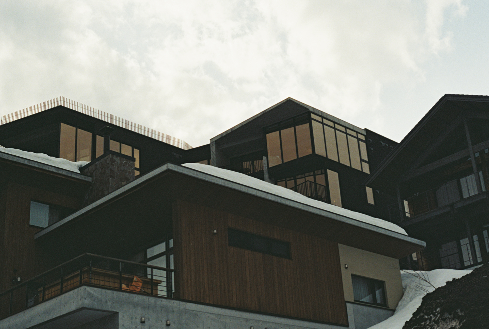
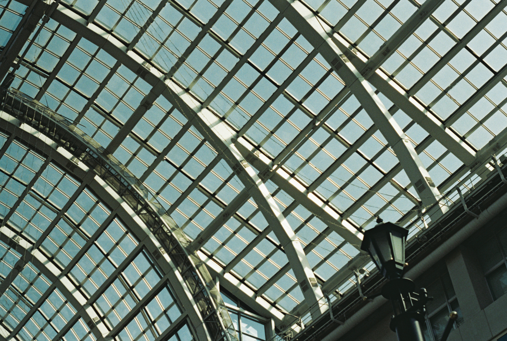
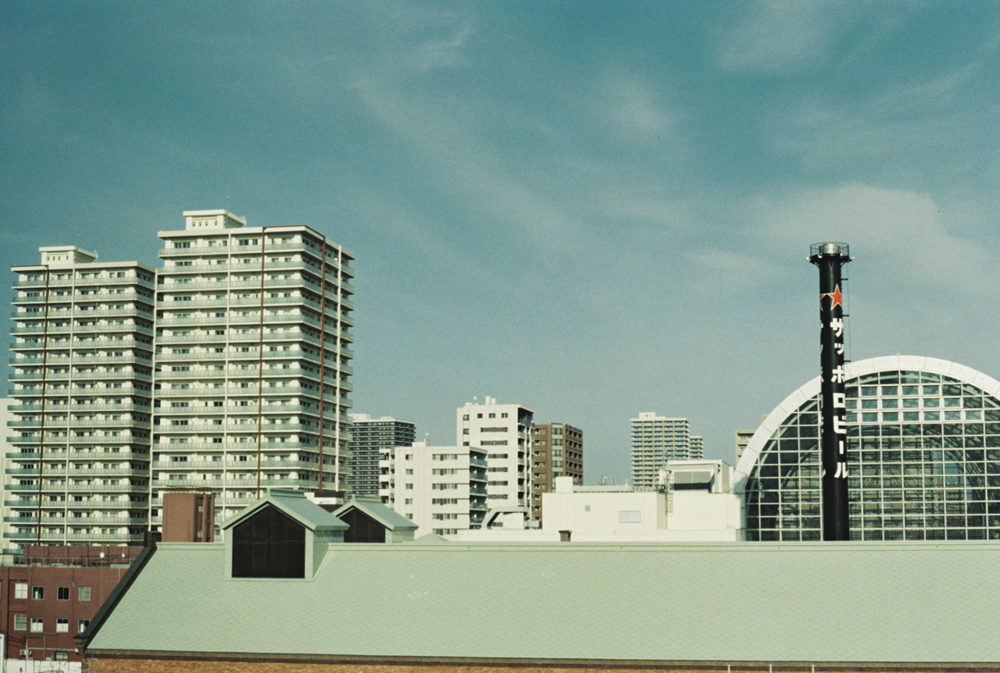
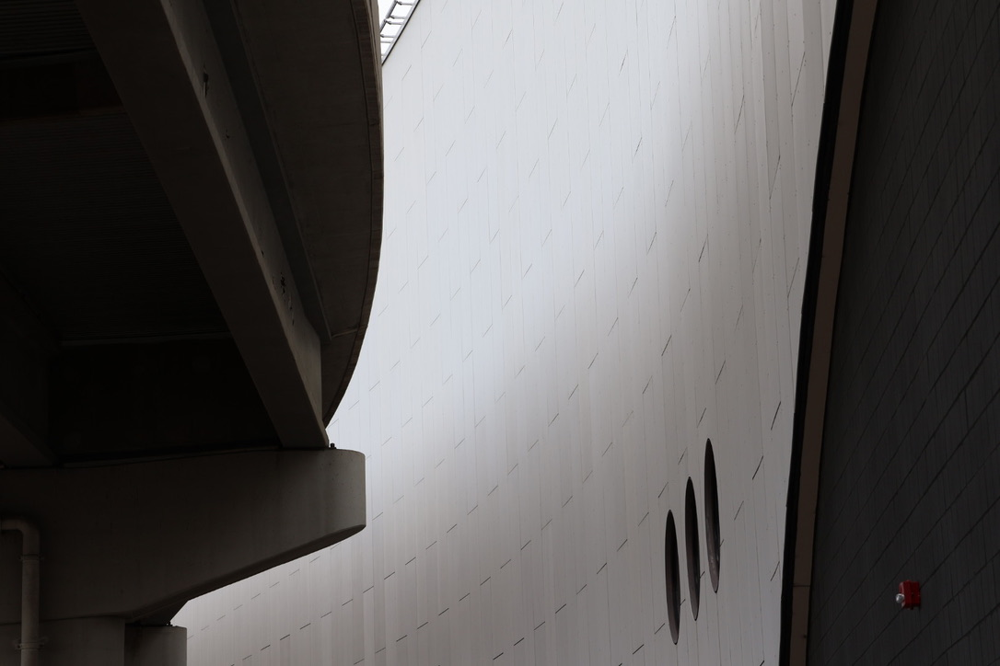
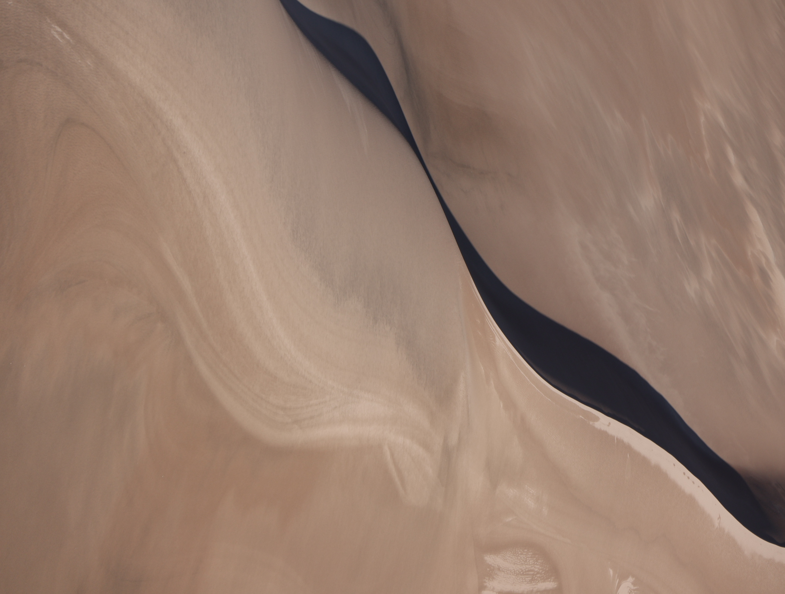
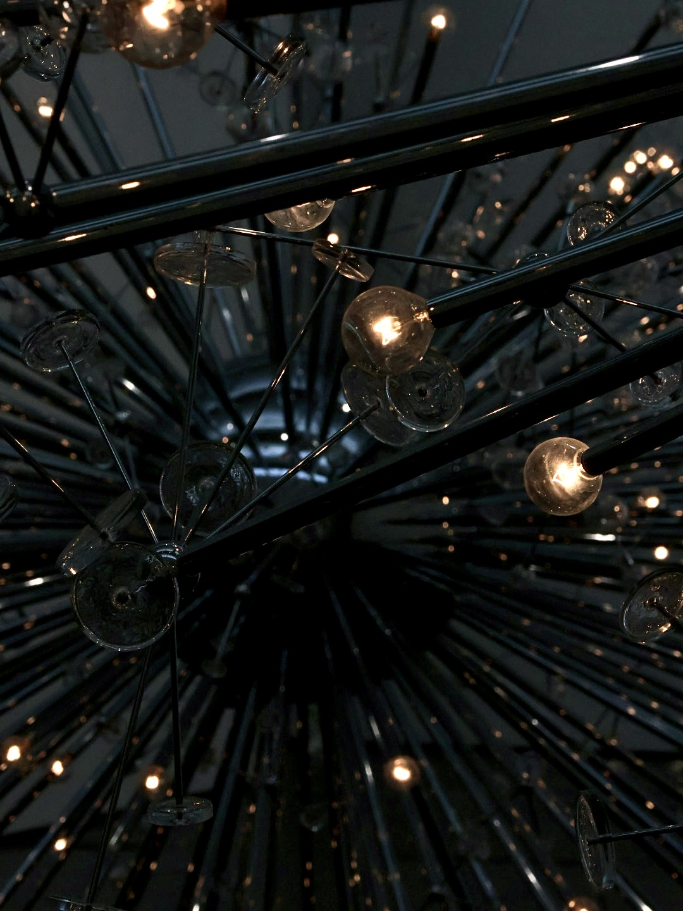
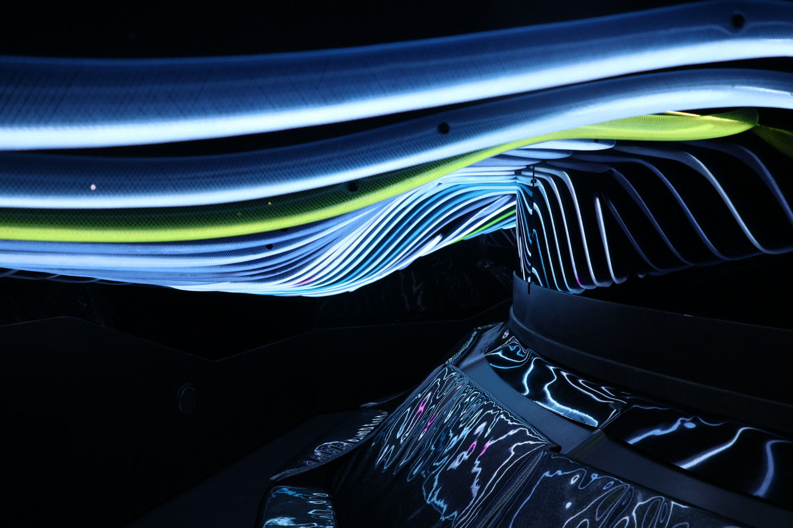
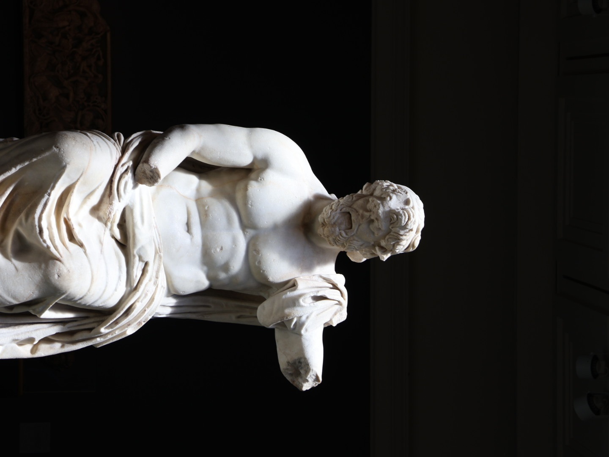
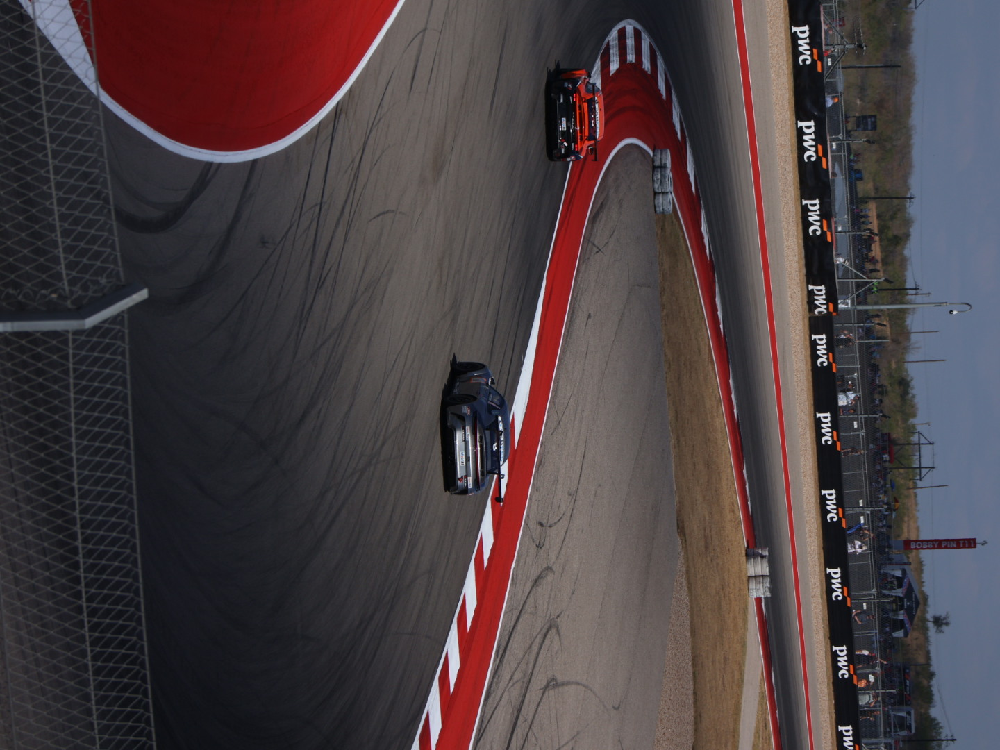
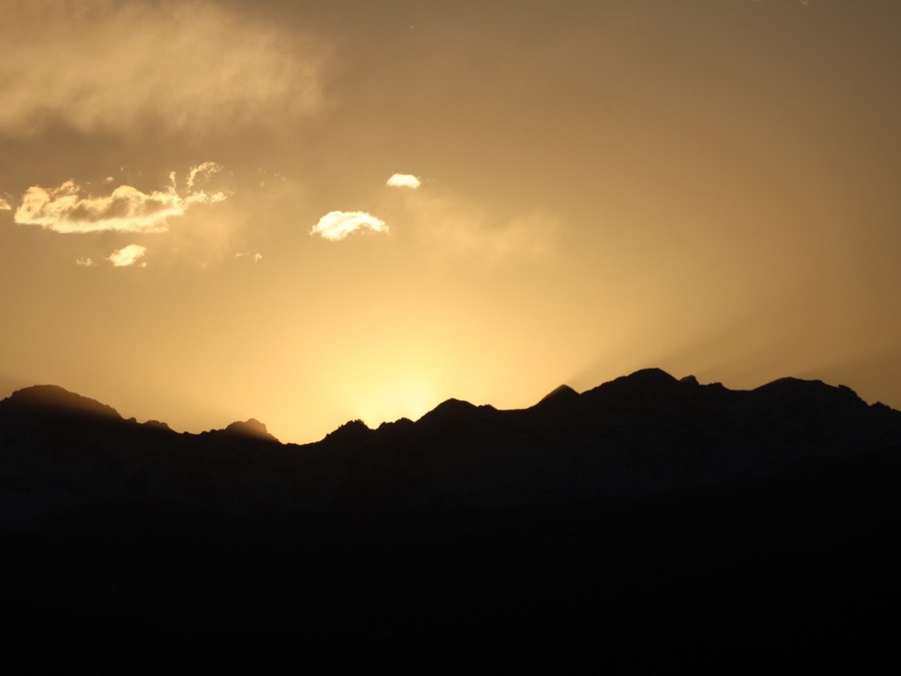

Visual Studies / Ongoing
Light, Shadow
& Space.
Light transforms composition, reveals material texture, and sculpts depth. An ongoing visual laboratory capturing architectural form, luminous atmospheres, and analog observations.

02 / Architecture
Vertical Massing & Urban Elevation
02 / Architecture
Structural Rhythm & Facade Alignment

02 / Architecture · Analog
35mm Film Study · Exposure 11A

02 / Architecture · Analog
35mm Film Study · Exposure 24A

02 / Architecture · Analog
35mm Film Study · Exposure 28A

02 / Architecture
Spatial Perspective & Monochromes

01 / Light Studies
Luminous Horizon & Atmospheric Gradient

01 / Light Studies
Vertical Luminaire Grazing & Shadow Depth

01 / Light Studies
Interior Daylight & Geometric Contrast

01 / Light Studies
Reflected Glazing & Surface Highlights

01 / Light Studies
Ambient Warmth & Spatial Illumination

01 / Light Studies
Specular Highlights & Night Reflection

01 / Light Studies